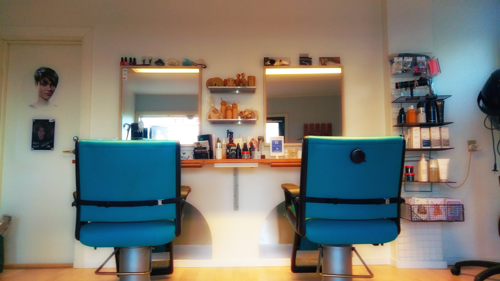
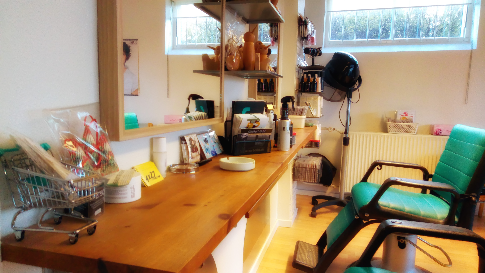

Sanne’s Klip er en frisør med et god håndværk, kvalitet og mode. Salonen åbnede i 1984 af mig, som er den eneste frisør. Jeg har flere års erfaring inden for frisørfaget. Hos Sanne’s Klip er den fornemmeste opgave at imødekomme kundernes ønske lige fra de træder ind af døren. Her går jeg op i at få kundernes ideer til at blive en frisure lige som de ønsker. For hele tiden at være up to date på moden og de nyeste teknikker tager jeg løbende på kurser i ind og udland. På den måde bliver der konstant bygget videre på min 4-årige uddannelse. Sanne’s passion for frisør faget kan altid ses i hendes håndværk samtidig med at det personlige sættes i højsædet bliver det altid til en positiv oplevelse når man klippet hos Sanne. Sanne er altid god for en sludder men respektere også de mere stille eksistenser. Sanne respektere sine kunders ønsker og derfor har man lov til at ryge inde i salonen hvis det er det man ønsker, du får udover det også ekstra services som den bedste kaffe og til børnene er der lidt slik.

